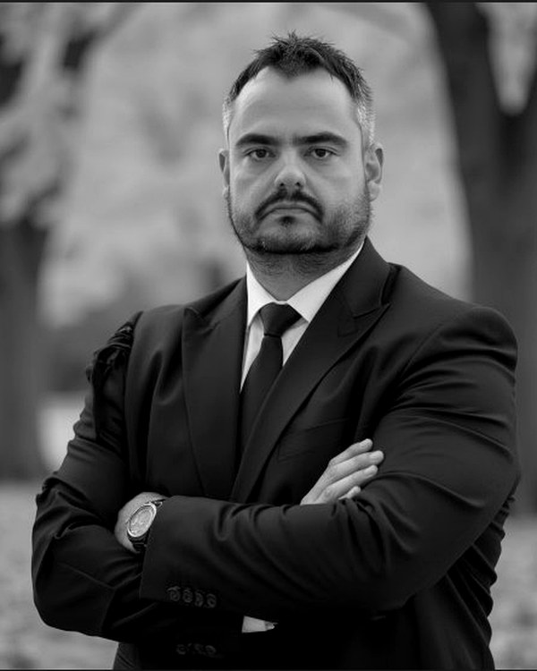

Os prints, a prisão e o STJ: o caso em que a Sexta Turma exigiu perícia técnica e relaxou a preventiva fundada em conversas de WhatsApp sem certificação
Por Luiz Henrique Baldissera, Advogado criminalista · OAB/PR 55.717 · OAB/SC 78.938-A. Leitura de 13 minutos.
EmentaEm processo penal, ter o aparelho do acusado nas mãos da polícia não basta. É preciso provar, com método verificável, que o que se mostra ao juiz é o que estava no aparelho.
O caso começa em janeiro de 2022.
Para quem está chegando
Imagine que a polícia precisa provar que um vizinho seu cometeu um crime grave. Em vez de levar a carta original que o vizinho escreveu como prova, a polícia tira uma foto da carta com o celular. Depois, a carta original desaparece — ninguém mais sabe onde foi parar. Quando o juiz pede para examinar a carta, só existe a foto. E ninguém pode garantir que essa foto é exatamente a carta original, sem cortes, sem montagens, sem edição posterior.
Foi mais ou menos isso que aconteceu nesse caso, mas em vez de cartas eram conversas de WhatsApp. A polícia acessou o celular do acusado e tirou capturas de tela das mensagens. Os celulares ficaram guardados, mas as capturas — sem nenhuma assinatura digital que comprovasse a integridade — foram a prova que sustentou a prisão de uma pessoa por mais de três anos.
Em fevereiro de 2026, a Sexta Turma do Superior Tribunal de Justiça disse: isso não basta. Antes de continuar prendendo alguém com base em capturas de tela sem certificação, é preciso fazer uma perícia técnica que comprove que aquilo que está nos autos é exatamente o que estava no celular. Enquanto a perícia não é feita, o acusado responde ao processo em liberdade, com medidas de monitoramento.
A história abaixo conta o caso em detalhe — o porquê, o como, o que o tribunal decidiu, e o que isso ensina sobre a forma como a defesa criminal de qualidade trabalha hoje, em uma era em que a prova digital virou central no processo penal.
A história, contada do início
Janeiro de 2022, na Comarca de Serra, no Espírito Santo. A polícia investiga um homicídio cometido em um contexto que a denúncia descreveria depois como agiotagem e extorsão. Apreende dois aparelhos celulares — um do acusado e um da pessoa apontada como vítima — e retira o DVR de videomonitoramento que registrou o dia dos fatos.
Um investigador da Delegacia de Crimes Contra a Vida acessa diretamente os celulares apreendidos. Não emprega ferramenta forense padronizada — softwares como o Cellebrite, usados por peritos para extrair dados de aparelhos eletrônicos preservando integridade verificável. Faz, em vez disso, o que muitos relatórios policiais ainda fazem hoje: captura telas das conversas no aplicativo de mensagens, transcreve trechos em um relatório, organiza tudo em forma de documento. As imagens do DVR são apenas transferidas para arquivos de mídia, sem perícia técnica. O material todo é juntado aos autos como prova.
Em novembro de 2022, com base nesse conjunto, o juízo de primeiro grau decreta a prisão preventiva do acusado por homicídio qualificado e associação criminosa. Os elementos centrais que sustentam a imputação são duas expressões captadas das conversas: referências a "dias trabalhados" e "colo do capeta", interpretadas pela acusação como tratativas relativas ao pagamento da execução e à confirmação do óbito. O acusado, a partir daí, fica preso.
A defesa do acusado impetra habeas corpus no Tribunal de Justiça do Espírito Santo, que denega a ordem. Apresenta novo habeas corpus no Superior Tribunal de Justiça, denegado monocraticamente. Apresenta agravo regimental dessa decisão monocrática. E é nesse agravo que, em fevereiro de 2026, mais de três anos depois da prisão, a Sexta Turma do STJ vai dar uma resposta com consequências relevantes — não só para esse caso, mas para todo defensor e para todo cidadão que possa um dia se ver alvo de uma investigação penal sustentada por prova digital.
Por que a defesa enxergou um problema na prova
No vocabulário do processo penal brasileiro, há uma expressão que aparece com cada vez mais frequência: cadeia de custódia. É o conjunto de procedimentos que documenta a história completa de uma prova material — desde o instante da coleta até o momento em que ela é examinada e apresentada ao juiz. Quem coletou, quando, em que condições, em qual embalagem, sob qual lacre, transportada por quem, recebida por quem, processada por qual perito, armazenada em qual depósito. O Código de Processo Penal, depois da Lei 13.964/2019 (o chamado Pacote Anticrime), passou a tratar disso nos arts. 158-A a 158-F.
Em prova material clássica — uma arma, um objeto apreendido, uma porção de substância — o registro físico é razoavelmente intuitivo: lacra-se, etiqueta-se, descreve-se. O acondicionamento físico já cumpre boa parte da função de preservação. Em prova digital, o jogo muda. O dado digital é volátil. Pode ser copiado, reorganizado, exportado, reindexado sem deixar sinais perceptíveis a olho nu. Pode até ser sinteticamente construído para parecer autêntico — algo que, com o avanço das ferramentas de inteligência artificial, deixou de ser cenário hipotético e virou risco operacional do dia a dia.
Por essa razão, o protocolo internacional de tratamento da prova digital exige duas providências técnicas que não estavam no caso. A primeira é a chamada extração forense: o uso de uma ferramenta padronizada (Cellebrite, FTK, Encase) que faz uma cópia bit a bit do dispositivo, preservando inclusive metadados, arquivos apagados e estrutura interna. A segunda é a aplicação de uma assinatura criptográfica chamada hash — uma sequência única de caracteres derivada matematicamente do conteúdo. Pense no hash como uma impressão digital do arquivo: qualquer alteração, por menor que seja, gera uma sequência diferente. Comparar o hash gerado no instante da coleta com o hash do mesmo arquivo no laudo permite afirmar, com certeza técnica, que nada foi alterado no caminho.
A defesa, ao examinar os autos, apontou: nada disso foi feito. Não houve extração forense. Não houve hash. Houve apenas um investigador acessando o aparelho, fotografando telas e digitando o que via. E, embora o acesso tivesse autorização judicial e o investigador estivesse identificado, o produto entregue ao processo carecia de qualquer mecanismo técnico que permitisse demonstrar, depois, que o que foi apresentado correspondia exatamente ao que estava no aparelho no momento da apreensão. Esse é o coração da impugnação defensiva: prints e relatórios manuais, sem rastreabilidade técnica, são juridicamente frágeis quando carregam o peso de sustentar uma acusação penal e, mais ainda, uma prisão preventiva.
A resposta dos tribunais de origem — e por que ela não convenceu o STJ
A primeira instância e o Tribunal de Justiça do Espírito Santo refutaram a tese. Argumentaram que o material consistia em "capturas de tela" e em "imagens transferidas para arquivos", coisas que, segundo essa leitura, não exigiriam conhecimento técnico-pericial especializado. Aplicaram o art. 563 do Código de Processo Penal — a regra do pas de nullité sans grief, segundo a qual só há nulidade no processo penal quando há prejuízo demonstrado. Como a defesa não apontava concretamente o que teria sido adulterado, não haveria, na visão dos tribunais, base para nulidade.
É um argumento clássico, e ele tem força. Em muitas situações de prova material tradicional, ele funciona perfeitamente. O problema é que, em prova digital, ele já não é suficiente — e o STJ, no julgamento de 10 de fevereiro de 2026, explicou exatamente por quê.
A virada na Sexta Turma do STJ
A Sexta Turma do Superior Tribunal de Justiça reuniu-se em 10 de fevereiro de 2026 para apreciar o agravo regimental. Cinco ministros: Carlos Pires Brandão (relator), Og Fernandes, Sebastião Reis Júnior, Rogerio Schietti Cruz e Antonio Saldanha Palheiro. A decisão foi unânime.
No AgRg no HC 1.014.212/ES (Rel. Min. Carlos Pires Brandão, j. 10/02/2026, DJEN 20/02/2026), a Corte deu parcial provimento ao agravo regimental e concedeu, em parte, a ordem de habeas corpus. Determinou duas providências objetivas: a realização de perícia oficial nos dispositivos eletrônicos apreendidos, com exame técnico complementar voltado a aferir integridade e autenticidade dos dados; e a substituição da prisão preventiva por medidas cautelares diversas — monitoramento eletrônico, proibição de contato com corréus e testemunhas, proibição de ausentar-se da Comarca sem autorização e comparecimento periódico em juízo.
A decisão não foi de absolvição. Não foi nem de nulidade radical da prova. Foi algo mais cirúrgico: o reconhecimento de que, antes de a prisão preventiva continuar sustentada por aquele material digital, era preciso confirmar tecnicamente o que esse material era. E, enquanto essa confirmação não ocorresse, a custódia mais grave do ordenamento processual penal não se justificava.
Os três pontos que o voto fixa
O voto do Min. Brandão, acompanhado por unanimidade, fixa três pontos centrais que merecem ser registrados com precisão.
O primeiro é dogmático e tem peso institucional: a prova digital tem natureza distinta da prova material clássica. É volátil. É modificável sem deixar rastros perceptíveis. E o ônus de demonstrar sua integridade — a chamada identidade entre o dado coletado e o dado apresentado em juízo — incumbe ao Estado-acusação, não ao réu. Em palavras do voto, transcritas com precisão: "a dúvida razoável sobre a inalterabilidade dos dados não pode militar em desfavor do réu". É uma frase que parece simples; na prática forense, ela inverte a lógica que muitos tribunais ainda aplicam.
O segundo ponto é técnico-criptográfico e raro de aparecer em acórdão de tribunal superior brasileiro com esse nível de densidade. O voto reconhece o hash como ferramenta probatória central, e o faz em palavras próprias do relator:
Do voto
"O hash é um identificador criptográfico derivado do conteúdo, sensível a qualquer alteração, ainda que mínima, funcionando como marcador técnico de integridade em momentos distintos do procedimento. Sua função probatória não é retórica: permite comparar o estado do material no instante da coleta, da extração, do armazenamento e da perícia, oferecendo base objetiva para afirmar que o arquivo ou a imagem forense permaneceu inalterado."
O terceiro ponto é processual e talvez o de maior impacto imediato sobre o paciente: quando os principais elementos probatórios de autoria são dados digitais cuja fidedignidade necessita de confirmação pericial, a proporcionalidade do art. 282, § 6º, do Código de Processo Penal recomenda a substituição da prisão preventiva por medidas menos gravosas até a conclusão do exame técnico. Indícios cuja base aguarda confirmação técnica não autorizam, por si sós, a manutenção da custódia mais grave. Não se trata de inexistência de indícios; trata-se de indícios cuja base ainda precisa ser certificada.
O que a perícia, segundo o STJ, deve fazer
Talvez o trecho de maior valor operacional do voto esteja na delimitação dos quesitos que a perícia complementar deve cumprir. O Ministro relator não se contentou em determinar genericamente o exame; explicitou os quatro itens que devem compô-lo. A passagem funciona como um roteiro pronto para qualquer pleito defensivo análogo, em qualquer juízo do país:
Quesitos da perícia complementar
(i) verificar o estado atual do dispositivo e a existência de sinais de manipulação ou inconsistências internas;
(ii) realizar extração por metodologia forense padronizada, com documentação integral do procedimento e fixação de integridade do material extraído;
(iii) confrontar o conteúdo existente no aparelho com os elementos já juntados, aferindo correspondência material, cronológica e contextual;
(iv) produzir relatório técnico reprodutível, de modo a permitir auditoria e questionamento técnico em contraditório.
Como a defesa criminal atua em casos como este
Quando alguém procura defesa criminal e a acusação se sustenta em prova digital — capturas de tela de aplicativos de mensagens, áudios extraídos de celular, exportações de redes sociais, mensagens recuperadas de aparelhos apreendidos —, a primeira providência da defesa é técnica antes de ser jurídica. Trata-se de olhar o material e identificar como ele foi efetivamente produzido.
A pergunta-chave é simples e precisa ser feita logo nas primeiras leituras dos autos: a extração foi feita com ferramenta forense padronizada e fixação de integridade por hash, ou houve apenas captura visual e transcrição manual por agente de polícia? Se o procedimento foi do segundo tipo — e, na prática brasileira, ainda é o tipo mais frequente — abre-se um caminho argumentativo claro, agora com respaldo expresso da Sexta Turma do STJ.
A sequência defensiva tem três passos articulados, e o caso analisado mostra exatamente como cada um deles deve ser feito.
No primeiro passo, a impugnação concreta. Não basta alegar genericamente "quebra da cadeia de custódia". É preciso descrever, peça por peça, o que falta no material apresentado pela acusação: ausência de cópia forense bit a bit do dispositivo, ausência de hash gerado no momento da coleta, ausência de cadeia de assinaturas dos agentes que tiveram contato com o material, ausência de procedimento metodológico auditável. Quanto mais concreta a impugnação, maior a chance de o pleito ser efetivamente apreciado em vez de rejeitado como hipótese genérica.
No segundo passo, o pleito de perícia complementar nos exatos termos formulados pelo STJ. A defesa requer ao juízo a realização do exame com base nos quatro quesitos formulados no AgRg no HC 1.014.212/ES, citando o precedente como fonte do modelo. A força do pedido não vem da criatividade defensiva — vem da circunstância de que o tribunal, em decisão unânime, já desenhou o conteúdo mínimo dessa perícia. Pedir os quatro itens é pedir o que a Corte mesma considera adequado.
No terceiro passo, o pleito de substituição da prisão preventiva. A defesa articula que, enquanto a perícia não certifica a integridade da prova-base, a custódia preventiva carece de fundamento proporcional. O art. 282, § 6º, do CPP autoriza expressamente a substituição da preventiva por medidas cautelares diversas quando estas se mostram suficientes — e, no contexto de prova digital pendente de certificação, é precisamente essa a hipótese reconhecida pela Sexta Turma. Em casos de prisão prolongada, como o do precedente comentado, esse argumento ganha força adicional pelo simples decurso do tempo, que opera como elemento agravante da desproporcionalidade.
Quando o caminho funciona — e quando não
A tese encontra terreno fértil em situações que reúnem certas características. Quando a prova digital é determinante para a imputação ou para a custódia, e não apenas um elemento acessório dentro de um conjunto probatório robusto. Quando a produção dessa prova foi visivelmente aquém do padrão técnico exigido — extração manual, ausência de hash, relatório sem documentação metodológica reprodutível. Quando a defesa consegue documentar concretamente o déficit, indicando peça por peça o que falta no material. E quando o conteúdo digital provém de aparelho celular ou de extração de aplicativo de mensagens — pois, conforme o próprio voto explicitou, imagens de DVR de videomonitoramento têm regime mais brando, dada a natureza distinta da sua produção.
A tese encontra resistência em hipóteses opostas. Quando a prova digital é confirmada por outras fontes independentes — testemunhos consistentes, perícias técnicas adicionais, documentação contábil, registros bancários convergentes —, o argumento perde peso relativo, pois o conjunto probatório se sustenta mesmo se um dos seus elementos for fragilizado. Quando a defesa não consegue demonstrar, com concretude técnica, o que falta no material apresentado, o pleito tende a ser rejeitado como hipótese abstrata. E quando a matéria já foi objeto de preclusão em fases anteriores do processo — especialmente em procedimentos do Tribunal do Júri, em que vícios da prova devem ser arguidos antes da pronúncia, sob pena de preclusão (art. 571, I, do CPP) —, o caminho recursal fica significativamente mais estreito.
O que esse precedente representa
Para o cidadão que se vê alvo de uma investigação penal sustentada por prova digital, o precedente representa um caminho técnico definido — agora desenhado pelo Superior Tribunal de Justiça em decisão unânime — para questionar material probatório produzido sem rigor metodológico. Não é uma promessa de resultado, e nenhuma defesa séria pode formulá-la como tal. É a constatação de que o ordenamento processual penal brasileiro reconhece, expressamente, que apresentar prova digital aos autos não é a mesma coisa que provar o que essa prova diz. Há um intervalo entre uma coisa e outra. Esse intervalo é técnico. E preenchê-lo cabe à acusação, não à defesa.
Para o defensor que conduz a peça em casos análogos, o precedente oferece dois ativos diretamente utilizáveis. Um vocabulário técnico-jurídico consolidado pela Corte — hash, marcador de integridade, cópia forense, extração padronizada, auditabilidade, trilha verificável, identidade material entre fonte e artefato probatório. E um roteiro pericial com quatro itens prontos para serem incorporados a pleitos defensivos, com a autoridade de uma decisão unânime da Sexta Turma do STJ por trás.
Para a justiça criminal brasileira como um todo, o precedente sinaliza algo mais amplo. Em uma era em que ferramentas de inteligência artificial permitem reencenar conversas, falsificar áudios, modular metadados sem deixar rastros perceptíveis, o tribunal está dizendo que a apresentação de uma captura de tela já não pode ser equiparada à prova do conteúdo dessa captura. Os arts. 158-A a 158-F do Código de Processo Penal, introduzidos pelo Pacote Anticrime em 2019, finalmente começam a produzir, na jurisprudência dos tribunais superiores, os efeitos práticos para os quais foram pensados. A prática forense, especialmente nas comarcas em que a infraestrutura pericial ainda é precária, terá que se adaptar.
Voltando ao cenário
O caso começou em janeiro de 2022. A prisão preventiva foi decretada em novembro daquele ano. O paciente permaneceu preso por mais de três anos enquanto a defesa argumentava — primeiro no juízo de origem, depois no Tribunal de Justiça do Espírito Santo, depois no Superior Tribunal de Justiça. Em fevereiro de 2026, a Sexta Turma do STJ reconheceu o que a defesa vinha sustentando: prova digital sem certificação técnica, ainda que admitida nos autos, não é suficiente para sustentar, sozinha, a medida cautelar mais grave do ordenamento processual penal.
O acusado não foi absolvido. A prova não foi anulada. A perícia complementar foi determinada, e o processo seguirá com os elementos probatórios sendo testados pelos parâmetros técnicos que o tribunal exigiu. Mas a prisão foi substituída por medidas cautelares diversas. E o defensor que enfrentar, daqui em diante, situação parecida, tem agora uma decisão clara para invocar.
Ter o aparelho do acusado nas mãos da polícia não basta. É preciso provar, com método verificável, que o que se mostra ao juiz é o que estava no aparelho. O Superior Tribunal de Justiça disse isso, em palavras precisas, em fevereiro de 2026. A defesa criminal que internaliza essa lição muda o jogo no caso seguinte.
— L.H.B.
Normas e julgados citados
- STJ · AgRg no HC 1.014.212/ESSexta Turma, Rel. Min. Carlos Pires Brandão, julgado em 10/02/2026, DJEN 20/02/2026. Decisão unânime que determinou a realização de perícia técnica complementar em quatro itens para verificar a integridade de prova digital juntada aos autos sem extração forense, e substituiu a prisão preventiva por medidas cautelares diversas até a conclusão do exame.
- Lei 13.964/2019 (Pacote Anticrime)Introduziu os arts. 158-A a 158-F no Código de Processo Penal, normatizando o regime jurídico da cadeia de custódia da prova material no processo penal brasileiro.
- Código de Processo Penal · arts. 158-A a 158-FDefinição da cadeia de custódia, fases interna e externa, exigências de documentação e procedimentos de preservação da prova material.
- Código de Processo Penal · art. 282, § 6ºSubstituição da prisão preventiva por medidas cautelares diversas quando estas se mostrarem suficientes para os fins da custódia.
- Código de Processo Penal · arts. 312, 319, 563 e 571, IPressupostos da prisão preventiva, rol das medidas cautelares diversas, princípio da demonstração de prejuízo (pas de nullité sans grief) e preclusão de vícios processuais no procedimento do Tribunal do Júri.

Sobre o autor
Luiz Henrique Baldissera
Advogado criminalista · OAB/PR 55.717 · OAB/SC 78.938-A
Sócio titular da Baldissera Advogados. Atuação concentrada em defesa criminal de alta complexidade, recursos perante STJ e STF, execução penal e sistema penitenciário federal. Formação específica em Perícia Digital pela Academia de Forense Digital.
Ver perfil